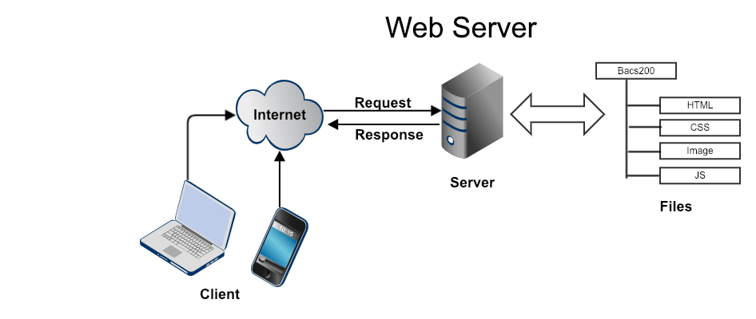

Lesson 39 - Static Website Generator
COURSE WEBSITE
Internet - Clients and Servers
Computers and phones request content from web servers

- Dynamic servers have a database
- Static servers return files
Sensei Server
- Uses dynamic content from database
- Student list, student servers, URL Game, Test pages
- Every page is generated on request
- Must be hosted with the database
Static Site
- Contains only HTML, CSS, Javascript
- No server-side logic (eg. Database, or code conversion)
- Server is only a directory of files
Static Site Generator
- Convert dynamic web pages into static web pages
- Avoid any dynamic logic in pages
- Save files in a Git repo
BACS 350 Website
- Stand-alone website
- Contains Lessons, Projects, Demos, Documents
- Will contain Videos for all Lectures
Project Status
- Download the initial repo now
- I will continue to enhance this code
- Need to serve video lecture from Shrinking World server
- Should be ready by Christmas
Git Repo - UNC-BACS-350
- https://github.com/Mark-Seaman/UNC-BACS-350
- Pull the repo
- Update the repo later to get new code
Student HELP SESSION
- We have completed the lecture series for BACS 350
- The remaining classes will focus on completing the last four projects.
- Class time - helping with student projects
- You only need to attend when you need help
Class Times
- Zoom links (two different ones)
- Class time - 2:30-3:20
- Office hours - 3:20-4:20